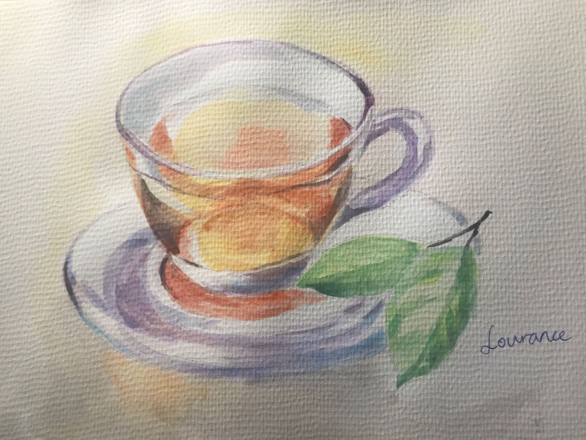

Slideshow Gallery for my own Paintings and Drawings
1 / 12
2 / 12
3 / 12
4 / 3
5 / 3
6 / 3
7 / 3
8 / 3
9 / 3
10 / 3
11 / 3
12 / 3

❮
❯
If you like my website, please click like and share with your friends below or follow my twitter page.
Follow @TwitterDev
If you want to see more about my twitter pages, here is the twitter feed.
Tweets by Zeruo